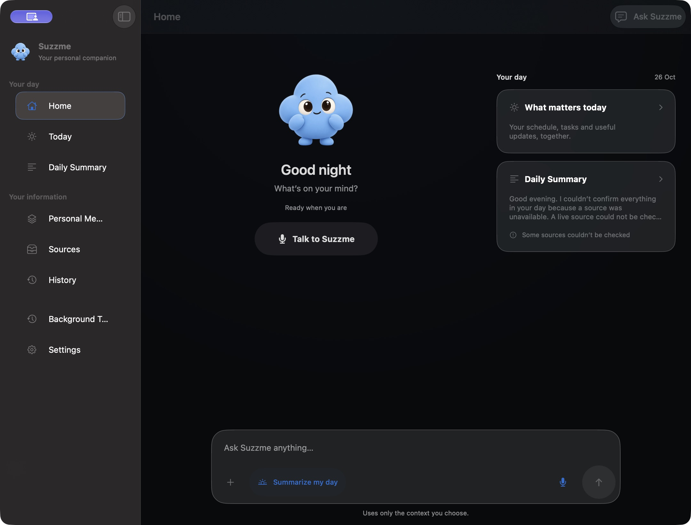
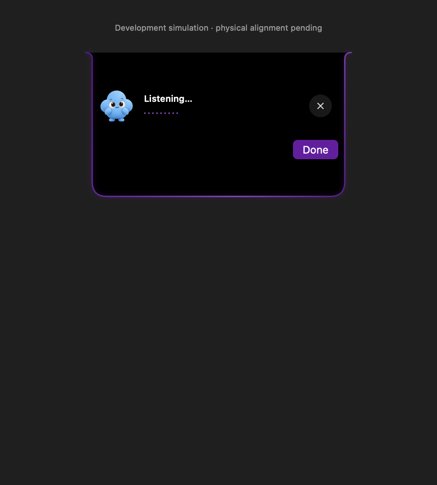

Summarize your day.
Plan what matters.
Set your time — like 8:00 AM. Suzzme gathers your calendar, emails, WhatsApp messages, and tasks on your Mac, summarizes what’s important, creates your daily plan, and syncs seamlessly to your iPhone.
At 8:00 AM, clarity greets you.
No noise. Just your day.
Choose a time scenario below to see how Suzzme synthesizes events, messages, and priorities into an actionable schedule.
Mac does the thinking.
iPhone keeps it close.
Sign in with the same Google account. Your Mac coordinates context normalization and AI reasoning; your iPhone receives the prepared briefing with zero battery drain.
The Local Intelligence Hub
Runs locally on your Mac. Gathers permitted information from Calendar, Reminders, local WhatsApp folders, and Gmail headers. Uses Apple's Foundation Models to draft your summary and schedule.

Effortless On-The-Go Companion
Receives the Mac-prepared daily summary instantly. Presents your briefing with zero local AI battery consumption via Live Activities, the Dynamic Island, and widgets.
Tuesday, 8:00 AM Briefing
3 meetings · 2 urgent emails · PR review plan ready
Designed like the finest Mac software.
Built with strict boundaries.
MacBook Notch Companion
Suzzme rests naturally under your MacBook’s physical display cutout. It expands fluidly when active, speaks your briefing, and recedes quietly into the background when you focus.

Privacy-First Data Intake
Gmail reads sender and subject headers only (never email bodies without consent). WhatsApp reads only the Mac chats you specifically pick from a local folder. No continuous screen capture.
Actions Require Your Confirmation
AI models have zero direct mutation authority. When Suzzme plans an event or adds a task, it follows a deterministic sequence: Plan → Confirm → Authorize → Execute → Verify.
Ask Suzzme with Natural Speech
Powered by short-lived AssemblyAI streaming tokens and ElevenLabs natural voice playback. Audio is processed ephemerally and never stored to disk.
You stay in complete control.
What Suzzme reads — and what it doesn't.
| Integration | How It Connects | What Suzzme Reads | What Is Kept Private |
|---|---|---|---|
| Apple Calendar & Reminders | Native EventKit permissions | Today's schedule, deadlines, priorities | No automatic writes without confirmation |
| WhatsApp (macOS) | User-selected local folder | Only the specific chats you choose | No WhatsApp Web scraping, no cloud upload |
| Gmail | Google OAuth restricted read | Sender, subject, date (up to 30 recent) | No message bodies or attachments read |
| Slack, Notion & GitHub | Local MCP Connector Server | Read-only issue titles and task items | Token-isolated, zero mutation rights |
| Microphone & Audio | System Audio Capture | Live transcription during active turn | Zero audio files saved or logged to disk |